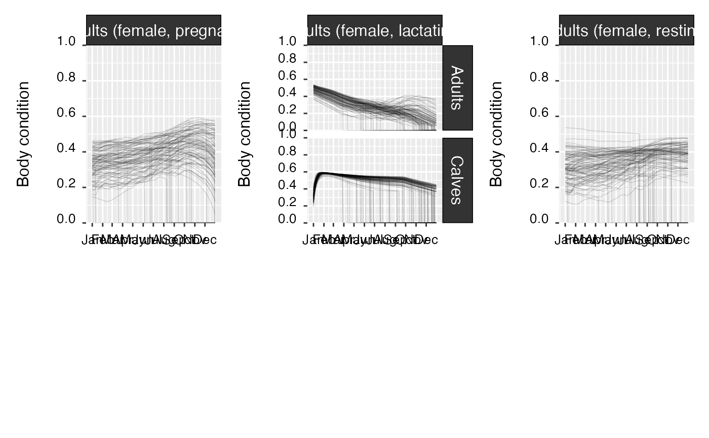
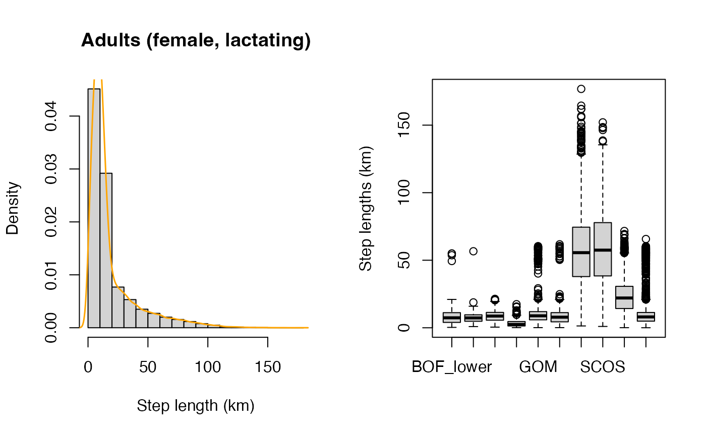
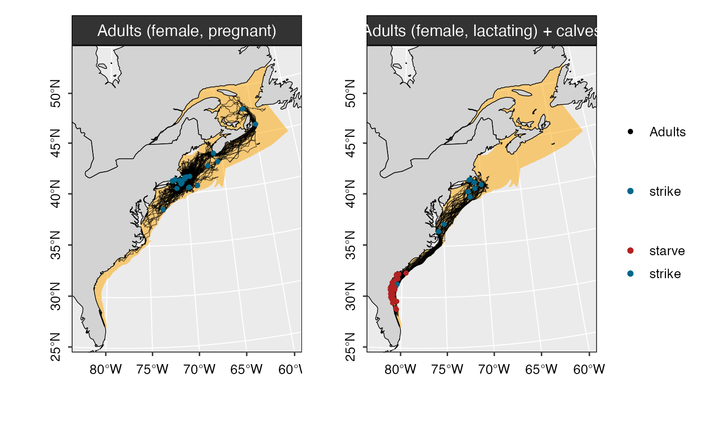

Getting started
Phil Bouchet, Enrico Pirotta, Len Thomas, Catriona Harris
Centre for Research into Ecological & Environmental Modelling, University of St Andrews2023-04-04
narwind.RmdPreamble
The narwind R package provides methods to forecast the
abundance of critically endangered North Atlantic right whales (NARW,
Eubalaena glacialis) under user-specified offshore wind
development scenarios. narwindoffers an implementation of
the spatially-explicit bioenergetic PCoMS model described in
[placeholder reference], whereby the movements of
different NARW cohorts (juveniles, adult males, pregnant females,
resting females, lactating females + dependent calves) are simulated
across throughout an entire calendar year, and population size
projections are made over a time horizon relevant to management (35–50
years). The package operates at a daily scale and accounts for the
effects of multiple anthropogenic stressors affecting NARW health,
reproduction, and survival, including: (1) direct mortality from vessel
strikes, (2) behavioral responses to noise exposure leading to cessation
of foraging/nursing activities, and (3) increased energetic costs
associated with entanglement in fishing gear.
Package installation
The latest development version of narwind can be
installed from GitHub. This requires either the remotes
or the devtools
package to be pre-installed.
# install.packages("remotes")
remotes::install_github("pjbouchet/narwind") # OR
# install.packages("devtools")
devtools::install_github("pjbouchet/narwind")Overview
This vignette covers all the steps required to run the bioenergetic model and make predictions of right whale abundance over a future time span of interest. This includes:
- Loading the package and compiling the necessary model code
- Running simulations using the
narwfunction. - Inspecting outputs using the
printmethod. - Generating summary statistics, simulation diagnostics, and maps
using the
summaryandplotmethods. - Forecasting population size using the
predictmethod.
narwind relies on multiple data inputs, including:
The package contains proxy surfaces for all of these, allowing analyses to be carried out out of the box.
Example analysis
Note: In R, the
help()function and?help operator provide access to the documentation pages for package functions, datasets, or other objects. To access documentation for the standardlm(linear model) function, for instance, enter the commandhelp(lm)orhelp("lm"), or?lmor?"lm"(i.e., the quotes are optional).
Loading the package
The first step is to load the package. This is done using the
library command, which prints a welcome message with basic
information in the R console:
Note:
narwindis largely written in C++, i.e., a high-level, general-purpose programming language often used in high-performance applications. C++ is a compiled language, meaning that any source code must first be converted into machine-readable code before execution. This compilation process results in an executable file, which can be translated as R functions. This step is automatically performed in the background as part of thelibrarycall above.
Running the model
The bioenergetic model is run by calling the narw()
function. The number of simulated animals per cohort, nsim,
is the only mandatory argument; all others are optional and set to
default values.
# Simulate 20 juvenile females and store the outputs in an object called 'm'
# This is the same as m <- narw(20,2)
m <- narw(nsim = 20, cohort = 2)The arguments that can be passed to narw() are listed
below.
| Argument | Default value | Description |
|---|---|---|
nsim |
1000 |
Positive integer. Number of simulated animals. |
scenario |
NULL |
An optional object of class narw.scenario, as returned
by scenario() function. |
cohort |
1:6 |
Integer between 1 and 6. Unique identifier for population
cohorts. Defaults to all cohorts. Note that calves are simulated
simultaneously with their mothers when 1: Juveniles (male) |
n.cores |
NULL |
Positive integer. Number of CPU cores to use in parallel processing.
The default value of NULL detects the processor
configuration and sets up computations to run on the maximum allowable
number of available cores. |
progress |
TRUE |
Logical. If TRUE, a progress bar is shown during
execution. |
The resulting object is of class narwsim:
class(m)[1]
#> [1] "narwsim"Viewing outputs
Outputs from the simulator can be viewed using the
print() method. This is as simple as typing the model
object name (m) and pressing [enter]. The
default behavior here is to return data for the first animal, only
showing the first 4 days of the simulation. This can be easily changed
by the user, as demonstrated below:
# Default overview - same as print(m)
m
#> =========================================================================================
#> Juveniles (female)
#> =========================================================================================
#>
#> --------------------------
#> Locations
#> --------------------------
#> day date easting northing region
#> 1: 1 2023-10-01 570.5000 711.5000 SNE
#> 2: 2 2023-10-02 572.8459 710.8892 SNE
#> 3: 3 2023-10-03 576.8999 714.1513 SNE
#> 4: 4 2023-10-04 566.5474 716.2079 SNE
#>
#> --------------------------
#> Attributes
#> --------------------------
#> day cohort gsl alive age bc length length_a length_b
#> 1: 1 2 0 1 8.539626 0.4342804 12.11183 1364.5 -0.3657856
#> 2: 2 2 0 1 8.542365 0.4342003 12.11235 1364.5 -0.3657856
#> 3: 3 2 0 1 8.545105 0.4341172 12.11287 1364.5 -0.3657856
#> 4: 4 2 0 1 8.547845 0.4339878 12.11339 1364.5 -0.3657856
#> length_c mass leanmass fatmass mass_a mass_b mouth_r mouth_a
#> 1: -0.1313088 27596.59 15611.93 11984.66 -4.744729 2.943317 0.144827 76.7
#> 2: -0.1313088 27596.16 15613.90 11982.26 -4.744729 2.943317 0.144827 76.7
#> 3: -0.1313088 27595.59 15615.87 11979.72 -4.744729 2.943317 0.144827 76.7
#> 4: -0.1313088 27592.76 15617.84 11974.92 -4.744729 2.943317 0.144827 76.7
#> mouth_w
#> 1: 1.754045
#> 2: 1.754045
#> 3: 1.754045
#> 4: 1.754045
#>
#> --------------------------
#> Stressors
#> --------------------------
#> day is_entgl entgl_head severity entgl_d entgl_start entgl_end strike
#> 1: 1 0 0 0 0 0 0 0
#> 2: 2 0 0 0 0 0 0 0
#> 3: 3 0 0 0 0 0 0 0
#> 4: 4 1 1 0 98 5 103 0
#> noise_resp noise_lvl dB_thresh
#> 1: 0 60 167.8385
#> 2: 0 60 148.1454
#> 3: 0 60 143.6136
#> 4: 0 60 159.7249
#>
#> --------------------------
#> Activity budgets
#> --------------------------
#> day d_travel swimspeed t_travel t_feed t_nurse t_rest n_zero
#> 1: 1 2.424104 1804.578 9.644303 0.00000 0 14.355697 2
#> 2: 2 5.203462 1486.786 5.321012 12.42987 0 6.249117 1
#> 3: 3 10.554795 4050.615 10.672276 0.00000 0 13.327724 2
#> 4: 4 10.870773 5273.142 10.813231 0.00000 0 13.186769 2
#> t_sum t_remain
#> 1: 7.398010 8.300995
#> 2: 18.536378 1.821207
#> 3: 7.866902 8.066549
#> 4: 6.496610 8.751695
#>
#> --------------------------
#> Growth
#> --------------------------
#> day E_tot E_in E_out delta_fat DE_lip ED_lip lip_anab lip_catab
#> 1: 1 -220.9927 0.00000 220.9927 -2.482985 0.75 39 0.8 0.5842510
#> 2: 2 -218.8074 2.19446 221.0019 -2.396151 0.75 39 0.8 0.5694499
#> 3: 3 -221.0111 0.00000 221.0111 -2.539549 0.75 39 0.8 0.5975108
#> 4: 4 -469.8425 0.00000 469.8425 -4.798583 0.75 39 0.8 0.5310850
#>
#> --------------------------
#> Energy intake
#> --------------------------
#> day feed preyconc minprey gape feedspeed captEff impedance daylight
#> 1: 1 0 1344.983 1458.3957 1.865464 0.7008901 0.8736602 0.0000000 11.18667
#> 2: 2 1 1344.983 942.7493 1.865669 1.3345262 0.9251695 0.3042104 11.18667
#> 3: 3 0 1424.718 1481.9111 1.865874 1.0681980 0.9754286 0.4070404 11.18500
#> 4: 4 0 1245.189 2036.9214 1.866079 0.9440565 0.9301422 0.2731820 11.18500
#> feed_effort targetBC cop_mass cop_kJ digestEff metabEff
#> 1: 0.007502788 0.5271131 0.0004930470 0.03092918 0.8861356 0.7375350
#> 2: 0.007517563 0.5271131 0.0002481966 0.02006514 0.8760189 0.6936689
#> 3: 0.007532045 0.5271131 0.0003612771 0.02496677 0.8763330 0.8003921
#> 4: 0.007547086 0.5271131 0.0004595583 0.02455236 0.8852611 0.7473367
#> E_cop
#> 1: 9.966428e-06
#> 2: 3.026242e-06
#> 3: 6.326663e-06
#> 4: 7.464859e-06
#>
#> --------------------------
#> Energy costs
#> --------------------------
#> day rmr LC stroke E_growth
#> 1: 1 199.9365 0 0.1209014 21.05627
#> 2: 2 199.9533 0 0.1526573 21.04859
#> 3: 3 199.9701 0 0.1546609 21.04098
#> 4: 4 199.9870 0 0.1483103 21.03327
# First 20 days of the simulation for the fifth whle
# print(m, 20, 5)The print() method has the following arguments:
| Argument | Default value | Description |
|---|---|---|
obj |
- |
Input model object, as returned by narw(). |
rows |
4 |
Positive integer, or vector of positive integers indicating which
days of the simulation should be displayed. Defaults to 4,
which returns data for days 1, 2, 3, 4. |
whale |
1 |
Positive integer indicating the individual for which data should be extracted. |
Summarizing outputs
The summary() method provides a range of diagnostics for
assessing how simulated whale behavior aligns with biological
expectations. These include1:
- A breakdown of mortality by cohort, region, and cause of death.
- A tally of daily locations by cohort, region and country (U.S. vs. Canada).
- A summary of spatial movements, at both daily (
step) and annual (migration) scales. The proportion of animals that reached either migratory endpoint (i.e., the SEUS calving grounds and the Gulf of St Lawrence feeding grounds) is also reported for each cohort. - A summary of occupancy rates and residency times in each region, per cohort.
- An overview of activity budgets, i.e., mean (± SD) time spent (hrs) engaging in each of the four categories of behavior considered in the model (traveling, resting, nursing, and feeding), by region.
- Time series of individual body conditions, by cohort.
Several plots are also produced to illustrate
summary(m)
#> -------------------------------------------------------------
#> -------------------------------------------------------------
#>
#> NORTH ATLANTIC RIGHT WHALE (Eubalaena glacialis)
#>
#> --- MODEL SUMMARY ---
#>
#> -------------------------------------------------------------
#> -------------------------------------------------------------
#>
#> BOF: Bay of Fundy (lower, upper)
#> CABOT: Cabot Strait
#> CCB: Cape Cod Bay
#> GOM: Gulf of Maine and Georges Bank
#> GSL: Gulf of St Lawrence
#> MIDA: Mid-Atlantic
#> SCOS: Scotian Shelf
#> SEUS: South-east United States
#> SNE: Southern New England
#>
#> =============================================================
#> SIMULATIONS
#> =============================================================
#>
#> No. animals: 20
#>
#> Cohort(s):
#> Juveniles (female)
#>
#> Simulation start: October
#>
#> =============================================================
#> MORTALITY & HEALTH
#> =============================================================
#>
#> cohort dead alive
#> ------------------- ---------- -----------
#> Juveniles (female) 10.0% (2) 90.0% (18)
#>
#> +++++++++++ By region +++++++++++
#>
#> cohort cause_death CCB GOM
#> ------------------- ------------ ---------- ----------
#> Juveniles (female) strike 50.0% (1) 50.0% (1)
#> Juveniles (female) starve 50.0% (1) 50.0% (1)
#> =============================================================
#> LOCATIONS
#> =============================================================
#>
#> region jv(fml)
#> ---------- -------------
#> BOF_lower 1.5% (106)
#> BOF_upper 1.1% (74)
#> CABOT 0.0% (0)
#> CCB 3.3% (227)
#> GOM 53.2% (3693)
#> GSL 0.0% (0)
#> MIDA 0.0% (1)
#> SCOS 10.6% (737)
#> SEUS 0.0% (0)
#> SNE 30.3% (2101)
#>
#>
#> country jv(fml)
#> -------- -------------
#> Canada 13.2% (917)
#> U.S. 86.8% (6022)
#>
#> =============================================================
#> MOVEMENTS (km)
#> =============================================================
#>
#>
#> cohort step migration
#> -------- ------------------------- ------------------------------
#> jv(fml) 11.4 (± 12.1) [0 – 98.3] 4,033 (± 741) [1,522 – 5,675]
#>
#>
#> cohort reached SEUS reached GSL
#> -------- ------------- ------------
#> jv(fml) 0.0% (0) 0.0% (0)
#>
#> =============================================================
#> HABITAT USE
#> =============================================================
#>
#> +++++++++++ Number of animals visiting each region (N = 20) +++++++++++
#>
#> region jv(fml)
#> ---------- ------------
#> BOF_lower 25.0% (5)
#> BOF_upper 10.0% (2)
#> CABOT 0.0% (0)
#> CCB 40.0% (8)
#> GOM 100.0% (20)
#> GSL 0.0% (0)
#> MIDA 5.0% (1)
#> SCOS 90.0% (18)
#> SEUS 0.0% (0)
#> SNE 100.0% (20)
#>
#> +++++++++++ Days spent in each region +++++++++++
#>
#> region jv(fml)
#> ---------- --------------------------
#> BOF_lower 21.2 (± 18.3) [2 – 45]
#> BOF_upper 37 (± 15.6) [26 – 48]
#> CABOT 0 (± 0) [0 – 0]
#> CCB 28.4 (± 13.9) [11 – 49]
#> GOM 184.7 (± 68.5) [43 – 300]
#> GSL 0 (± 0) [0 – 0]
#> MIDA 1 (± 0) [1 – 1]
#> SCOS 40.9 (± 28.3) [4 – 97]
#> SEUS 0 (± 0) [0 – 0]
#> SNE 105 (± 41.1) [39 – 177]
#>
#> +++++++++++ Total number of regions visited +++++++++++
#>
#> No.regions jv(fml)
#> ----------- -----------
#> 3 50.0% (10)
#> 4 35.0% (7)
#> 5 10.0% (2)
#> 6 5.0% (1)
#>
#>
#> =============================================================
#> ACTIVITY BUDGETS
#> =============================================================
#> Total: 24 hrs
#>
#> +++++++++++ Juveniles (female) +++++++++++
#>
#> region travel (hrs) rest (hrs) nurse (hrs) feed (hrs)
#> ---------- --------------- --------------- ------------ ---------------
#> BOF_lower 8.09 (± 4.01) 9.87 (± 3.72) 0 (± 0) 11.55 (± 1.9)
#> BOF_upper 8.2 (± 3.17) 11.11 (± 3.12) 0 (± 0) 10.52 (± 1.14)
#> CABOT 0 (± 0) 0 (± 0) 0 (± 0) 0 (± 0)
#> CCB 7.51 (± 3.57) 10 (± 3.29) 0 (± 0) 11.6 (± 1.7)
#> GOM 8.29 (± 3.87) 9.8 (± 3.53) 0 (± 0) 11.54 (± 2.13)
#> GSL 0 (± 0) 0 (± 0) 0 (± 0) 0 (± 0)
#> MIDA 14.2 (± NA) 9.8 (± NA) 0 (± NA) 0 (± 0)
#> SCOS 12.96 (± 5.07) 6.41 (± 4.14) 0 (± 0) 8.85 (± 3.44)
#> SEUS 0 (± 0) 0 (± 0) 0 (± 0) 0 (± 0)
#> SNE 8.65 (± 3.84) 10.26 (± 3.54) 0 (± 0) 11.38 (± 2.05)
Plotting outputs
Lastly, maps of simulated whale tracks can be drawn using the
plot() method. When web is set to
TRUE, interactive web-based maps that can be zoomed and
panned are produced using the ggplotly R package.
The location (easting, northing) and ID of each animal are displayed on
hover.
plot(m)
The plot() method takes the following arguments:
| Argument | Default value | Description |
|---|---|---|
obj |
- |
Input model object, as returned by narw(). |
web |
FALSE |
Logical. Whether to produce static maps (FALSE) or
interactive, web-based maps (TRUE). |
whale.id |
NULL |
Positive integer indicating the individual for which
data should be extracted. When set to NULL (the default),
the function plots tracks for all simulated animals. |
nmax |
100 |
Positive integer. Maximum number of animals to plot. This argument should be kept < 100 to minimize memory usage and avoid lengthy run times. |
animate |
FALSE |
Logical indicating whether a video animation should be produced. This feature is currently only in development and significantly increases run times. |
Simultaneously visualized graphically.↩︎